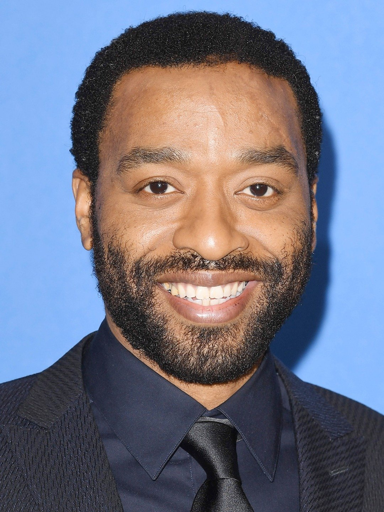

12 Years A Slave Protagonists
| Images | Cast | Stage Name | Role |
|---|
|  | Chiwetel Ejiofor | Solomon Northup | He is the main protagonist of the critically acclaimed 2013 film 12 Years A Slave. He was born a free black man in New York State but was later deceived, kidnapped, and sold into slavery in the deep South. Fearless and willing to face any obstacle, Northup is determined to return home to his family after being kidnapped and sold into slavery for 12 years. He fought and kept pushing until he was able to get a letter to his lawyer friend through Bass who was an abolitionist from Canada. Northup was later rescued by his friends, freed, and returned to his family. |
 | Brad Pitt | Samuel Bass | Mr. Bass white carpenter working to build a house on the Epp’s plantation. Bass was a native of Canada and an outspoken abolitionist. Solomon Northup confided in him, and he responded with loyalty and help. At great risk to his own safety, Bass wrote and mailed letters to Northup’s friends in the North and was instrumental in helping those friends find and rescue Solomon from slavery. |
| Rob Steinberg | Parker | He treated all men and women equal and he does not judge anyone no matter the color of their skin. He was Bass’s contact in regard to rescuing Northup from slavery and to restore him to freedom. He set the ball in motion for the freedom of Northup. |